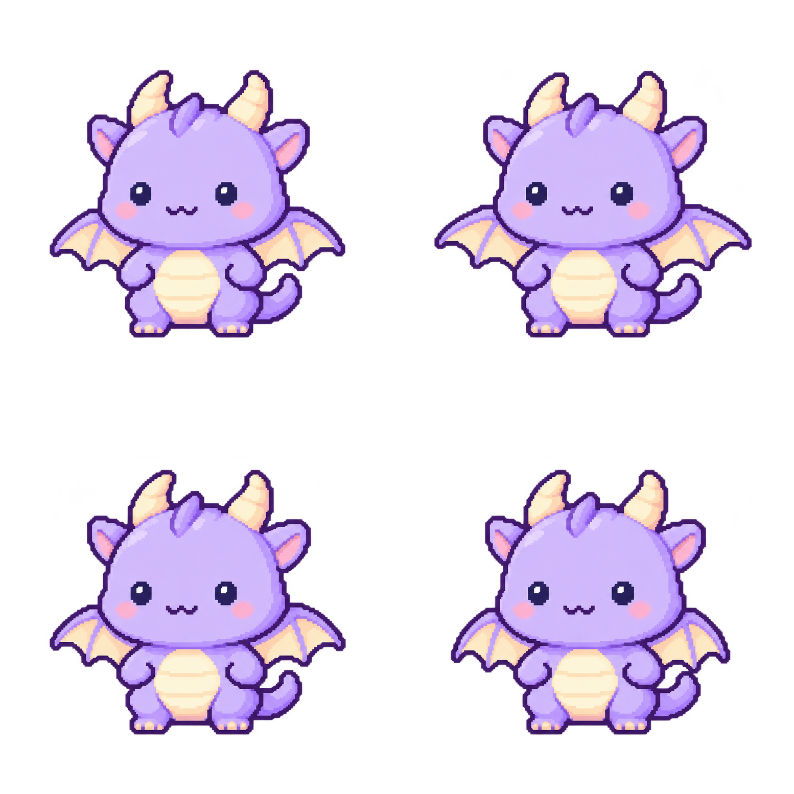
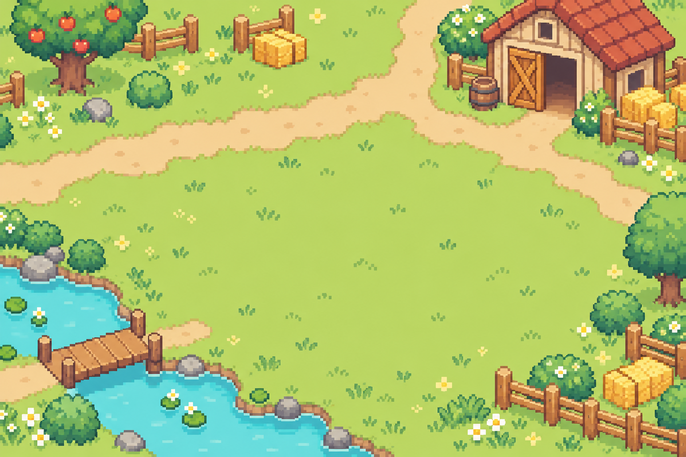
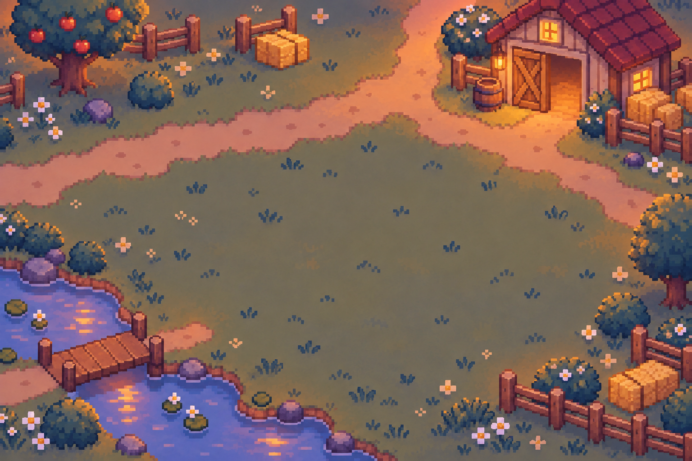

循環播放 · 透明 APNG
方格由頁面提供，未畫進素材；完整保留原圖像素，只切格並平移對齊。
下載動畫預覽成年龍 · 待機動作候選 v2
四格只做翼尖與翅膜的小幅收放，雙眼保持睜開。播放節奏為 Web 預覽設定，一次循環約 0.92 秒。
正面、飛行側面及本次四格待機預覽已由使用者確認。尚未替換正式 Web 角色，瀏覽器實際整合仍待驗證。
方格由頁面提供，未畫進素材；完整保留原圖像素，只切格並平移對齊。
下載動畫預覽
2 × 2 排列，每格 777 × 777；各格已補透明留白，腳底定位一致。
下載透明 PNG 圖集

此頁為獨立美術預覽，不連接養成資料，也不會寫入存檔。APNG 僅供查看；正式動畫可依圖集與畫格資料由 Canvas 播放。